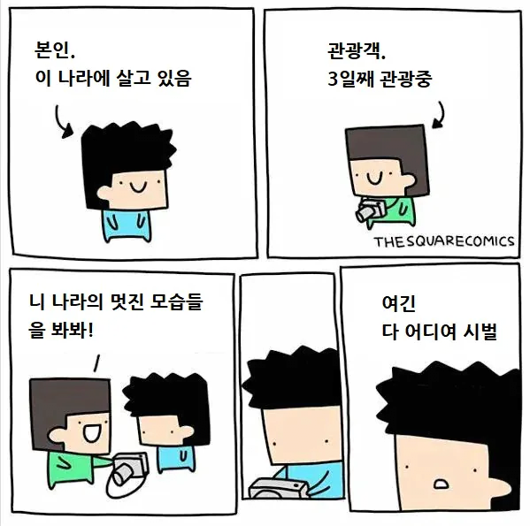

삼성궁 오르막길 차안에서 40분 있던거 같은데 차존나 많음 ㅅㅂ
씨맨스는 생긴 모습 좀 바뀜
?? 여기가 한국?
아니 딴건 몰라도 광명 주공 8단지는 한 20년 전에 살았었고
저 동은 친구가 살던데인데 저렇게 찍어놓은거 보니 새삼스럽네
생각을 바꾸고 시선을 돌리면 풍경은 다르게 보일 수 밖에
출근길도 출근이 아닐때 보면 느낌이 또 다르거든
광명 주공 8단지는 철산자이더헤리티지가 되었다…
여긴 다 어디여 ㅆㅂ
사진빨 ㅇㄷ
철 좋을 때 날씨 좋은날 골라 가서 부감 띄우면 뭔들 안예쁘겠냐
첫사진 보고 어디나라지? 하는데 한국지명이 적혀있네 ㅋㅋㅋㅋㅋ
여긴 다 어디여 시벌
옥천 : 드론
사천 : 드론
대구 : 나무 없어짐(병들어 죽음)
광명 : 없어짐
서산 : 못들어감(옛날에 몰래 이곳저곳 들어갔었는데, 다 막히고 일부 구간만 공개 개방)
-사진으로 보기 좋네
네곳이나 가봤네 차만 있었으면 다 갔는데
육백마지기, 태백 바람의 언덕은 진짜 ㅈ돼는 곳이니 한번쯤 가볼만함
육백마지기 시발 좋아하던 곳이어서 옛날에 아빠차 몰래 훔쳐서 차박하러 자주 갔었는데
어느순간 차박성지로 스멀스멀 퍼지더니
주민들 있는 곳인데 밤 중에 차박하면서 민폐 끼치기, 쓰레기 버리고 가기 등 콜라보로 차박 금지 붙더라
주말에 가도 사람 별로 없었는데 사람 많아지고 이런 건 불편하지만 상관 없는데
가서 민폐 끼치고 지랄하는 씹새끼들은 좆 같다 이거에요
금산산장은 비올때 가봤는데 멋졌음
삼성궁 저기 뭔 수련단체였던것 같은데
삼성궁은 거의 등산길에 돌길이니 이쁜신발 신고 사진 찍고싶은 사람은 따로 챙겨가는걸 추천